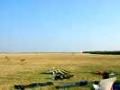
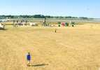
Pour vous situer, vue du terrain vers le nord, avec le port d'échouage au fond à droite.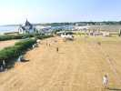
Presque dans le même axe, l'isthme d'accès, avec le parking dessus, la route étant en cul-de-sac, la plage à gauche de la chapelle, le port à droite.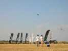
Et, dès jeudi soir, les présents commencent à animer la chose. D'abord en implantant tout un bazar au sol...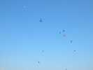
...ensuite en mettant des cerfs-volants en l'air. Il faut dire que Penvins est surtout consacré au pilotable, mais des monofils, ça attire quand même plus le public...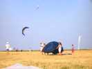
On s'organise petit à petit. Les tentes pour dormir, c'est pas ici, on créera dans le fond un village spécial, y a de la place...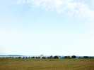
A mesure que le soir arrive, le village dortoir va prendre une ampleur motivée par le manque de chambres libres et la jeunesse des participants pilotes de pilotables...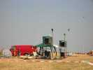
La place libérée, on installe la sono. La qualité du son est superbe, la puissance quelquefois un peu faible pour comprendre de l'autre bout les messages et commentaires !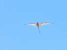
Quelqu'un a monté un Furax de Ramlal Tien (plus de 8 m d'envergure, et une esthétique à rendre jaloux)... Ramlal lui-même ne viendra que demain (avec un autre Furax...).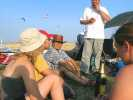
Mais il fait chaud, très chaud. Alors on ouvre une "petite" bouteille de bière. Je ne savais pas que ça existait en cette taille !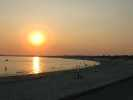
Comme il fait toujours aussi chaud quand le soleil se couche, la plage, et même la mer, sont encore pleines de baigneurs !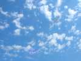
Le lendemain matin, comme tous les jours, un peu de vent, puis la brise de mer s'établit en générant d'abord un calme plat et un changement de cap de 150 degrés, en commençant par l'altitude zéro...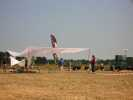
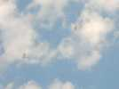
Nous sommes survolés par des drôles de mouettes avec de longs cous et de longs becs...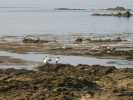
Hé bien ce sont des ibis sacrés, noirs et blancs. Evadés d'un zoo il y a 20 ans, ils meublent maintenant les marais et estuaires de la côte Atlantique du Morbihan à Royan (merci "le site la plume" pour ces précisions).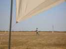
Pendant qu'on se relaxe sous la tente, certains s'épuisent au soleil aux commandes d'un pilotable. Il faut dire que le plateau est très riche et les prestations des champions incroyables...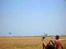
Il y en a même un qui fait voler deux pilotables en dual (trop de vent, sinon il en prend trois !). Mais c'est épuisant !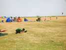
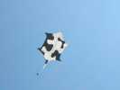
Mais les monofils ne se laissent pas aller ! On fait voler une peau de vache...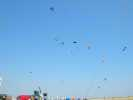
Il y a aussi au menu du Furax, des Marconis, des rokkakus, des deltas-poissons, des oiseaux, etc...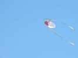
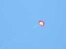
Et un Rokkaku en forme de soleil, ou de tournesol ?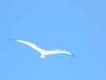
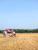
Un énorme bol d'une douzaine de mètres se gonfle laborieusement dans un vent un peu faible.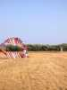
Progressivement on lâche du spi...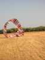
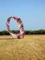
Alors on prend son temps !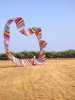
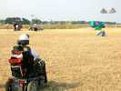
Il y aura même une démonstration de pilotage deux lignes en fauteuil roulant, avec les poignées passées aux coudes.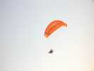
Dans un autre genre, un paramoteur décollera du terrain et prendra des photos aériennes, de nous et de Penvins. Facile, face au vent, il peut voler en stationnaire...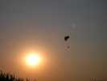
Le soleil se couche, le paramoteur refera un passage dans le contre-jour...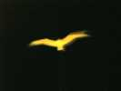
Du vol de nuit, il y en aura, un le vendredi, un le samedi après le feu d'artifice, mais les participants seront peu nombreux...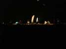
Il y a quand même des projecteurs et des illuminations... Et on projettera le film tourné pendant les 2 jours précédents et monté splendidement par les expertes cadreuses et filmeuses.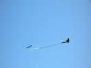
Le lendemain matin, on revole. Le delta fait des petites chatouilles avec sa queue au Marconi...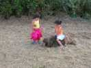
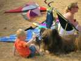
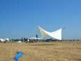
Zézé a acheté de grandes toiles dont l'aspect esthétique est indéniable, comme l'aspect pratique pour s'abriter du soleil tout en restant dans le vent !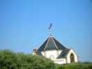
Un iconoclaste pas très respectueux ira caresser la vierge de son Révo, mais avec beaucoup de doigté...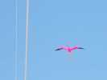
Dans la catégorie Oiseaux, il y a eu aussi un Pélican (volant trop haut pour la photo) et un flamant rose.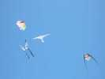
On verra aussi le papillon, en mode stable ou quasi-pilotable... de compagnie avec un Rokkaku, l'Oiseau de Ramlal et un Raymond.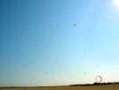
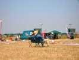
Finalement, si on ne fait pas trop d'efforts au soleil, le monofil c'est cool !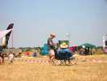
...surtout si le ravitaillement en liquide est prévu et dimensionné pour compenser les pertes par évaporation...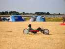
Il y aura aussi des tractionnistes roulant en buggy, en mountain-board (pourquoi mountain ?), en patins à roulette, et dans ce curieux char qui semble normal au premier coup d'oeil de profil.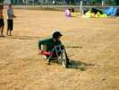
Mais, plus de face, on s'aperçoit qu'il n'a que 2 roues, comme un vélo ! Pourtant, je l'ai vu rouler...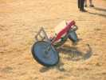
... bien que, dans les virages surtout, la position se transforme rapidement en plat ventre quand la traction reprend trop vite !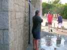
Mais il fait de plus en plus chaud, et la douche froide de la plage a beaucoup de clients !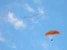
Le paramoteur revient tourner autour de nos oiseaux, jusqu'à former une patrouille avec l'Albatros !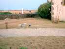
Mais c'était le 14 juillet hier, et samedi soir, un feu d'artifice se prépare devant la chapelle. Le patron veut voir tout dégager dans un rayon de 100 m, alors qu'à Chatel on tire avec les CV encore en vol !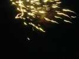
Et c'est parti, ce ne sera pas mal pour Penvins, après avoir toutefois attendu jusqu'à minuit moins le quart...